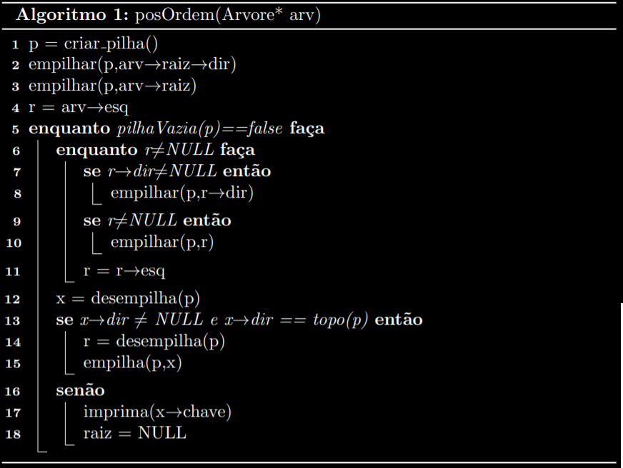

Primeiramente, temos que fazer o download e a instalação do Latex no seu computador. Como é uma ferramenta multiplataforma, ou seja, funciona em diversos Sistemas Operacionais, vamos ensinar como fazer a instalação nos dois principais: Windows e Linux.
Existe também uma plataforma TeX online chamada Overleaf que pode ser uma alternativa caso não esteja usando seu próprio computador. Neste caso, basta apenas entrar no site https://pt.overleaf.com/ , se registrar e começar o seu documento.
1. O Latex é uma ferramenta de compilação textual muito utilizada para a criação de documentos científicos. Apesar de ser um pouco complicado usar Latex no começo, todo o esforço vale a pena, pois os textos ficarão cada vez mais superiores aos feitos por editores de textos comuns.
2. A primeira coisa que se deve entender ao introduzir o Latex no cotidiano é a similaridade com códigos de programação, com isso, o mais comum a se aprender daqui pra frente são as funções para dar corpo ao texto e a utilidade das mesmas.
3. A primeira função a ser aprendida é: \documentclass{"tipo de documento"}
Esta, tem a finalidade de informar qual é o tipo de documento a ser produzido pelo autor. O "tipo de documento" pode ser trocado dependendo do documento que se deseja editar, como por exemplo "article", "report"(os nomes devem ser digitados em Inglês), entre outros. Dependendo do que se precisa, é uma função importante para informar o leitor o tipo do documento que está sendo lido.
4. Segundo, e não menos importante, temos as funções de começo e fim de documento, que servem (como o próprio nome já diz) para marcar qual é o início e qual é o fim do documento:
\begin{document}
O corpo do seu documento deve ser escrito entre essas duas funções.
\end{document}
5. Quanto à formatação básica:
6. Acentos e Letras:
Para fazer o uso de acentos e letras especiais o Tex dispõe de comandos que podem ser vistos na tabela a seguir:
| á | \´a |
| à | `a |
| â | \^a |
| ä | .a |
| ǎ | \v{}a |
| ő | \H{}o |
| ã | ~a |
| í | \'\i{} |
| ā | \=a |
| ė | . |
Para acentuar as letras como se usa em editores mais convencionais pode ser adicionado o seguinte pacote: \usepackage[ansinew]{inputenc}
7. Fontes: A fonte pré-determinada pelo Tex é chamada de romam, mas também possui outros tipos, como arial, italico, entre outros diversos. Estes comandos podem ser vistos na tabela a seguir:
| \rm | Roman |
| \sl | Inclinada |
| \bf | Negrito |
| \tt | Typewriter |
| \it | itálica |
| \sc | CAIXA ALTA |
8. Textos também podem ser formatados adicionando quote e quotation, que servem para indicar citações, por exemplo:
\begin{quote}
"citação";
\end{quote}
a diferença para o uso de quotation é que este possui na primeira linha de cada parágrafo do texto.
Existem ainda outros três comandos para formatação de parágrafos que são flushleft, center e flushright, usados para mudar o alinhamento do parágrafo pela esquerda, centro e direita respectivamente.
9. Para criar listas existem 2 comandos:
O itemize e o enumerate que, respectivamente, criam uma lista onde cada item começa com uma bolinha e cria uma lista onde cada elemento começa com um número.
\begin{itemize}
- Ciência da Computação.
- Licenciatura em Computação.
\end{itemize}
\begin{enumerate}
- Ciência da Computação.
- Licenciatura em Computação.
\end{enumerate}
10. O título do documento é feito da seguinte forma:
\title{título}
\author{autor}
\date{data} //este é opcional, se não usar é colocada a data atual
\begin{document}
\maketitle
Caso tenha mais que um autor pode ser mudado para a seguinte forma:
\author{primeiro \and segundo}
11. Tamanho de letras:
Na configuração básica do Latex as letras estão em tamanho 10pt. Para redefinir o tamanho, basta incluir, por exemplo, entre colchetes o tamanho entre \documentclass e {article}, ficando assim:
\documentclass[12pt]{article}
Se quiser somente alterar o tamanho de uma palavra, frase ou parágrafo, existem também os comandos \footnotesize, \small, \large, \Large, \huge ou \Huge.
Até aqui você já aprendeu o básico da utilização de LaTeX. O importante agora é a prática desses comandos para memorizar e se acostumar com a utilização dos mesmos. Assim, escreva um pequeno texto da sua preferência e tente adicionar a maioria desses comandos aprendidos até aqui. BOA DIVERSÂO!!!
12. Seções e subseçẽs:
Para escrever um texto acadêmico ou qualquer outro, devemos organizá-lo de tal forma que facilite a compreensão do leitor. Não diferente dos outros editores de texto, no Latex, podemos dividir o documento em seções e subseções com os comandos \section e \subsection seguidos de seus títulos entre chaves. Por exemplo:
\begin{abstract}
“Resumo a ser feito”.
\end{abstract}
Para incluir capítulos e partes, usa-se os comandos \part e \chapter, análogos ao uso de seções e subseções.
13. Bibliografia:
Uma bibliografia pode ser criada da seguinte forma:
\begin{thebibliography}
\bibitem(cada referência é incluída, precedendo esse comando)
\end{thebibliography}
14. O LaTeX ainda resolve outros problemas de formatação com a inclusão de alguns pacotes que servem para uma infinidade de coisas, como incluir gráficos, figuras, melhorar a formatação de algoritmos, entre outas.
Para isso, devem ser incluídos alguns pacotes para problemas específicos usando a função:
\usepackage[opção]{pacote}
Os pacotes são encontrados na internet, dependendo do que se deseja incluir no documento.
Chegamos então na parte de exercitar o que se aprendeu até agora. Esse passo é bastante importante, então não pule e faça para aprimorar suas habilidades.
A atividade proposta é de se criar um documento com o LaTeX, fazendo um modelo de um artigo científico. Assim, deve-se utilizar o que se aprendeu até esse momento, fazendo o uso das diversas funções que conhecemos até este momento, seções, subseções, título, letras e acentos, bibliografia e outras. Assim, a sua mente começará a entender melhor o funcionamento e com a prática a perfeição vem.
Muitas vezes queremos escrever em documentos notações matemáticas, às vezes para tornar digitais anotações manuais, ou para trabalhos importantes. Este tópico tem como objetivo trazer uma introdução sobre a matemática no LaTeX, algo que é nativo e de muita utilidade na ferramenta.
O símbolo mais importante para utilizar notações matemáticas no LaTeX é o seguinte: "$$", dentro destes dois cifrões podemos escrever diversos símbolos matemáticos e tirar todo proveito que a ferramenta pode nos dar!
Vamos começar com exemplos simples, você pode testar cada notação utilizando o Overleaf ou o TexStudio.
O seguinte Link contém um arquivo com todos os exemplos deste guia: Guia Exemplos
Exemplo 1: f(x) = 5(x^5) + 2x² + x + 3, uma função básica mas que pode ser muito feia se escrita diretamente desta forma em um editor comum, no LaTeX podemos utilizar os seguintes comandos:
$f(x) = 5x^{5} + 2x^{2} + x + 3$
O operador x^{} permite que elevemos "x" a qualquer potência, inclusive frações!
Vamos ver o exemplo a seguir utilizando a mesma função com coeficientes distintos.
Exemplo 2. f(x) = 5x^(½) + 2x^(⅗) + x + raiz cubica de (3)
$f(x) = 5x^{\frac{1}{2}} + 2x^{\frac{3}{5}} + x + \sqrt[3]{3}$
O comando \frac{}{} permite que expressemos frações, sendo o primeiro {} o numerador, e o segundo o denominador. \sqrt[]{} permite escolher a raiz que se deseja entre [] e a expressão {}, [] vazio acarreta em raiz quadrada. Podemos utilizar outros comandos dentro das chaves, de forma a colocar frações sobre frações.
Exemplo 3:
$\frac{\frac{1}{2}}{\frac{1}{4}}$
Muitos símbolos matemáticos e letras do alfabeto gregos são utilizados nas operações matemáticas, esses tais são representados por comandos no LaTeX, os quais podem ser encontrados facilmente pela Internet, segue exemplo:
Fonte: http://www.phph.com.br/engenharia/computacao/item/167-mimetex-o-latex-para-web.html
Para utilizá-los basta digitar os "$$" e escrever o símbolo desejado dentro precedido de " \":
Exemplos 4 e 5: Gamma, Lamba, epsilon, Beta, Omega.
Obs: Algumas letras possuem versões minúsculas e maiúsculas, bastando trocar o comando para utilizá-las:
Ex4: $\gamma, \lambda, \epsilon, \beta, \omega$\
Ex5: $\Gamma, \Lambda,\Omega$
Diversos outros símbolos são utilizados da mesma forma, bastando um comando para obtê-los.
Queremos saber se certo número escrito na forma binômio de Newton é maior ou igual a uma série chamada "Série geométrica". Mas para isso preciso de 2 funções que quero diferenciar por índices abaixo delas, como representar isso? Imagino que em um editor comum seria extremamente difícil, mas isso é possível com poucos comandos no LaTeX:
Exemplo 6:
\$f_1(x)= $${4}\choose{2}$$\
f_2(x)=\sum_{n=1}^{\infty} x^n\
f_1(x) \geq f_2(x)?$

\geq (maior ou igual) é um símbolo de comparação, existem outros como \leq (menor ou igual), \equiv (equivalente), \neq (diferente) dentre outros.
Para os amantes (ou não) de cálculo, é muito comum encontrar limites, derivadas, integrais e os mais diversos tipos de funções no dia-a-dia. É possível escrever essas funções de maneira fácil e intuitiva na ferramenta:
Limites:
Sabemos que o limite de (1/x) quando x tende a 0+ é infinito, mas como representar isso?
Exemplo 7:
$\displaystyle \lim_{x\rightarrow 0^{+}} \frac{1}{x} = \infty$
Estes comandos permitem que possamos exprimir qualquer tipo de limite.
Derivadas:
As derivadas são simples de representar, podemos utilizar o comando "^{ }" ou "\frac{}{}".
Exemplo 8:
$f^{'}(x) , f^{''}(x) , f^{n}(x) , \frac{d}{dx}f(x) , \frac{d^{2}}{dx^{2}}f(x) $
Em sequência: Derivada primeira, derivada segunda, derivada n-ésima, derivada primeira e segunda com notação de Leibniz.
Integrais
As integrais não fogem muito do padrão apresentado anteriormente, usamos "_" e "^{}", além do \displaystyle para retirar qualquer formatação da linha dela.
Exemplo 9:
$\displaystyle \int_0^{2} f(x) dx$
Funções complexas:
Existem funções que apresentam comportamentos muito diferentes em diversos pontos, como exemplo a função módulo, que pode ser declarado como 2 instâncias. (-x) se x\< 0 e x se x\>= 0. Escrito dessa forma, fica mal formatado e um pouco ruim de se ler, porém é possível formatar esse tipo de funções no LaTeX do seguinte modo:
Exemplo 10:
$f(x)= \Bigg\{
\begin{array}{cc}
x, & se\, x\geq0 \\
-x, & se \,x < 0\\
\end{array}$
Agora que você já tem o conhecimento básico das noções de matemática no LaTeX, propomos a seguinte atividade:
Transforme o seguinte teorema em um código LaTeX utilizando tudo o que você aprendeu neste guia.
Dicas: usar a biblioteca \usepackage{amsmath} e colocar as expressões matemáticas entre \begin{equation*} e \end{equation*} para centralizar e dar destaque nas equações matemáticas.
Se desejar alguma ajuda e/ou correção para seu código, preencha o formulário abaixo e submeta o seu código. Iremos responder o mais oportuno possível.
Caso não tenha tempo de esperar, segue gabarito: Gabarito
As vezes temos algoritmos escritos em linguagens de programação específicas e desejamos mostrar seu funcionamento através de um pseudocódigo, abstraindo essas informações de forma a tornar entendível e implementável em qualquer linguagem. A biblioteca do LaTeX chamada "Algorithm2e" torna muito mais prático o processo de transformação de algoritmos implementados para pseudocódigo. O seguinte tópico tem como objetivo esclarecer algumas funções básicas da biblioteca, e permitir que em poucos minutos seja possível escrever diversos algoritmos. Obs: Todos os exemplos deste guia podem ser encontrados em: Guia_Exemplos
Para utilizar a biblioteca você deve importar o seguinte trecho de código "\usepackage[portuguese,onelanguage,ruled,linesnumbered,vlined]{algorithm2e}" . Esse trecho além de permitir utilizar a biblioteca, contém algumas informações sobre a exibição. A linguagem que o pseudocódigo será escrito (portuguese), escrito em uma única língua (onelanguage), formatado em uma caixa com título (ruled), onde as linhas são numeradas (linesnumbered) e que linhas irão identificar a indentação (vlined). Quando não "vlined" o código irá apresentar a frase "fim" ao término da indentação.
A seguinte estrutura básica corresponde à abertura de contexto de algoritmo e algumas outras funções:
\begin{algorithm}
\SetKwInOut{Input}{Entrada}
\SetKwInOut{Output}{Saída}
\Input{Inteiro a $\leq 10^{10}$}
\Output{Inteiro elevado ao quadrado}
\DontPrintSemicolon
b = a*a\;
return b;
\caption{int quadrado(int a)}
\end{algorithm}

Para tomar decisões, utilizamos algumas funções já prontas da biblioteca, a quais serão vistas no código exemplo à seguir:
\begin{algorithm}
\SetKwInOut{Input}{Entrada}
\SetKwInOut{Output}{Saída}
\Input{2 Notas de um Aluno.}
\Output{``Parabéns! Aprovado" se Média = 10,
``Aprovado" se Média $>$ 5.9 e ``Reprovado" caso contrário.}
\DontPrintSemicolon
media = (a+b)/2\;
\If{media == 10}{imprima(``Parabéns! Aprovado")}
\uElseIf{media $>$ 5.9}{imprima(``Aprovado")}
\Else{imprima(``Reprovado")}
\caption{aprovacao(double a, double b)}
\end{algorithm}
Obs: É possível encadear várias expressões dentro das chaves referentes às operações a serem realizadas, inclusive outras estruturas, como o exemplo à seguir:
\begin{algorithm}
\SetKwInOut{Input}{Entrada}
\SetKwInOut{Output}{Saída}
\Input{2 Notas de um Aluno.}
\Output{``Parabéns! Aprovado" se Média = 10,
``Aprovado" se Média $>$ 5.9 e ``Reprovado" caso contrário.}
\DontPrintSemicolon
media = (a+b)/2\;
\If{media $>$ 5.9}{
\If{media == 10}{imprima(``Parabéns! Aprovado")}
\Else{imprima(``Aprovado")}
}
\Else{imprima(``Reprovado")}
\caption{aprovacaoV2(double a, double b)}
\end{algorithm}
Temos ainda a estrutura "Switch", a qual permite vários "casos", vemos o exemplo à seguir:
\begin{algorithm}
\SetKwInOut{Input}{Entrada}
\SetKwInOut{Output}{Saída}
\Input{Caractere de Operação}
\Output{Operação realizada}
\DontPrintSemicolon
\Switch{Op}{
\Case{'D'}{imprima(``Despósito realizado")}
\Case{'S'}{imprima(``Saque realizado")}
\Case{'T'}{imprima(``Transferência realizada")}
}
\caption{banco(char Op)}
\end{algorithm}
Obs: \Case deve estar sempre dentro de \Switch
É muito comum utilizarmos diversas estruturas de repetição na programação, a biblioteca referente suporta algumas estruturas dessas, as quais serão exemplificadas a seguir:
\begin{algorithm}
\DontPrintSemicolon
i = 0\;
\While{i$\;\neq\;$10}{
i++\;
\If{i==5}{break\;}
}
\For{i = 5 \KwTo 10}{
imprima(i)\;
}
k = 0\;
\Repeat{k==15}{
k++\;
}
\caption{repeticao()}
\end{algorithm}
Obs: Lembra-se que essas "operações a serem realizadas", podem ser diversas, desde uma única, até diversas estruturas de decisões e inclusive outras estruturas de repetições, basta que as informações estejam dentro das chaves corretas.
Esses foram alguns exemplos básicos e úteis de como representar diversas estruturas da programação no LaTeX, desejar mais informações recomendaria acessar a documentação Doc_Algorithm2e, visitar a página de exemplos descrita acima, e/ou enviar um e-mail para nós.
Agora que você já possui os conhecimentos necessários, que tal realizar a seguinte tarefa?
Escreva um código LaTeX, utilizando a biblioteca "Algorithm2e" para o seguinte algoritmo (pós-ordem iterativo):
Dica: utilize $\rightarrow$ para o símbolo da seta.
Se desejar alguma ajuda e/ou correção para seu código, preencha o formulário abaixo e submeta o seu código. Iremos responder o mais oportuno possível.
Caso não tenha tempo de esperar, segue gabarito: Gabarito.
Se sentir alguma dúvida em símbolos matemáticos, favor visitar seção "Notação Matemática" no site.